NIRI
|
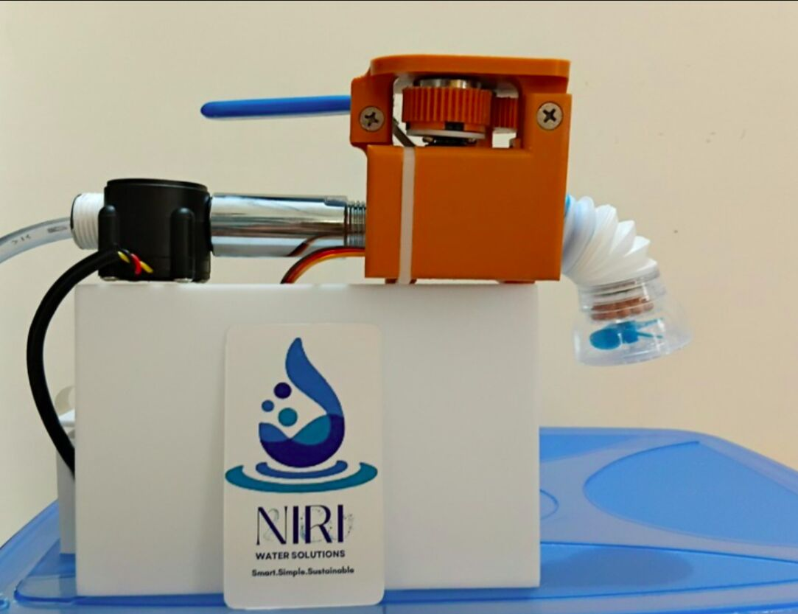 The device during a water test, with the orange housing over the gear mechanism. |

The mechanism without its case: keypad, servo, 3D-printed gears and the ball valve they turn. |

Inspiration
It all began in the summer of 2023, when I was 13. I turned on the tap, and not a single drop came out. From my balcony, I watched tanker after tanker arrive; our society's borewells had dried up. There were endless discussions about solutions like rainwater harvesting and percolation pits.
But nothing changed.
This isn't just my story. Bengaluru faces a daily shortage of about 500 million liters of water, and globally, around 4 billion people live under high water stress.
Existing fixes kept stalling for the same three reasons: large infrastructure changes, high cost and complexity, and no one taking ownership. Every solution sat at the society or government level, and nothing reached the individual tap.
Five out of six borewells in our society had dried up, and we were getting water only through tankers. My city faced a terrible water crisis that summer, and the government even announced a penalty for using fresh water to clean cars. We were rationing water for 8 hours a day. It was so frustrating.
Many were oblivious to the situation and took water for granted; many were aware but did nothing to conserve it; they thought the government or society should provide water to meet their needs. I went deeper and made a survey to find out 3 key factors:
- Lack of awareness of water consumption
- Lack of any action to reduce water use at individual levels
- Almost 40% of water is wasted because of irresponsible usage
Through my macro and micro surveys, I found something interesting: nearly half of household water loss comes from simple misuse, not scarcity.
We were mostly water illiterate, and also awareness and actions were very distant: North and South Pole. At that moment, I wanted to make water conservation simple, engaging, and intuitive like a daily habit. I wanted to make people aware that fresh water, the very source of sustaining life and business, is scarce and requires small steps from each individual to make a really big impact. And that started a water warrior campaign and a journey — of a device and system called NIRI, named after the Kannada word for water, Neeru.
Vision
Everyone should be able to save water every day, right at their tap. By pairing affordable technology with behavioral change, I want to make responsible water use a flexible, everyday habit that scales from homes to schools, hospitals, and public infrastructure.
System Overview
NIRI is a patented, IoT-enabled mechatronic water conservation system that cuts wastage through intelligent flow regulation, real-time leak detection, automatic shut-off, and behavior-driven nudges. It's built as a plug-in extension module that retrofits onto any existing tap or pipeline. Inside, a gear system drives a ball valve, rotating it to precise angles for fine-grained flow control. Refined over 6 iterations in 3 years, the device has 5 modes tuned to the highest-consumption points. It pairs with an AI water assistant that tracks consumption and uses the most effective methods to cut usage while maintaining comfort.
The five modes, as they were written down when the device was evaluated: Normal (tracks and displays real-time usage), Alert (notifies when consumption crosses a set threshold), Regulate (automatically reduces flow once limits are exceeded), Eco (temporarily halts flow to discourage excessive use) and Vacation (detects leaks and halts flow while nobody is home).

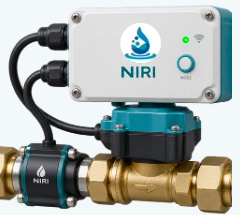
6th Iteration — IoT enabled with AI Assisting, as the MVP. (Please note this is an AI-generated image, so it is a render of the intended product rather than a photograph of the build.)
|
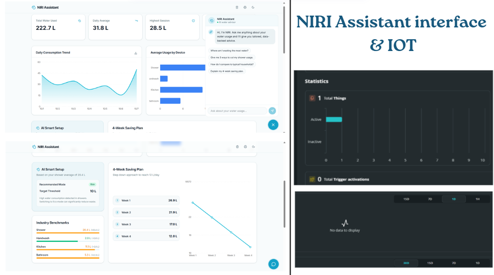 The NIRI assistant interface and IoT screens, where the consumption data from the device shows up. |
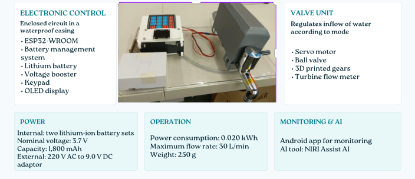 The specification sheet for the current build: ESP32 WROOM and OLED display in a waterproof casing, a servo motor turning 3D-printed gears on a ball valve, two lithium-ion battery sets at 3.7 V nominal, 220 V AC to 9 V DC adaptor, 30 L/min maximum flow rate, 250 g. |


Journey
1. Building the Tech
I stepped into the project with just a question: how can individuals participate in water conservation, and how can technology change behaviour patterns and increase awareness? The idea seemed crisp and clear. The making was the opposite of that — messy, but still fun.
I had very limited knowledge of hardware and software at the time. My mentor at the ATL lab listened patiently and didn't demotivate me, and asked me to learn about the Arduino microcontroller. From there I began building NIRI. I learned the Arduino coding language, sent commands, and got the thing to do what I wanted. I practised soldering and sometimes slightly burnt my fingers. I wired everything up. Eventually the components fell into place.
I remember the first prototype I made was just an OLED display and a buzzer, and the wires ended up burning when I presented it in the most theatrical manner possible.

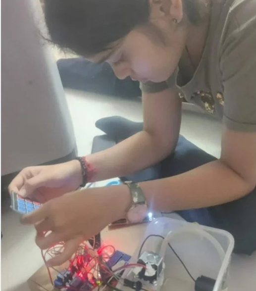
Soldering. This is the stage where I kept burning my fingers.
|
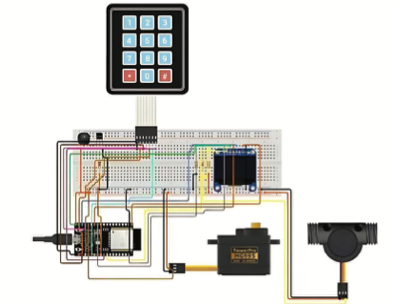 The same circuit drawn out properly: keypad, microcontroller on a breadboard, servo and buzzer. |
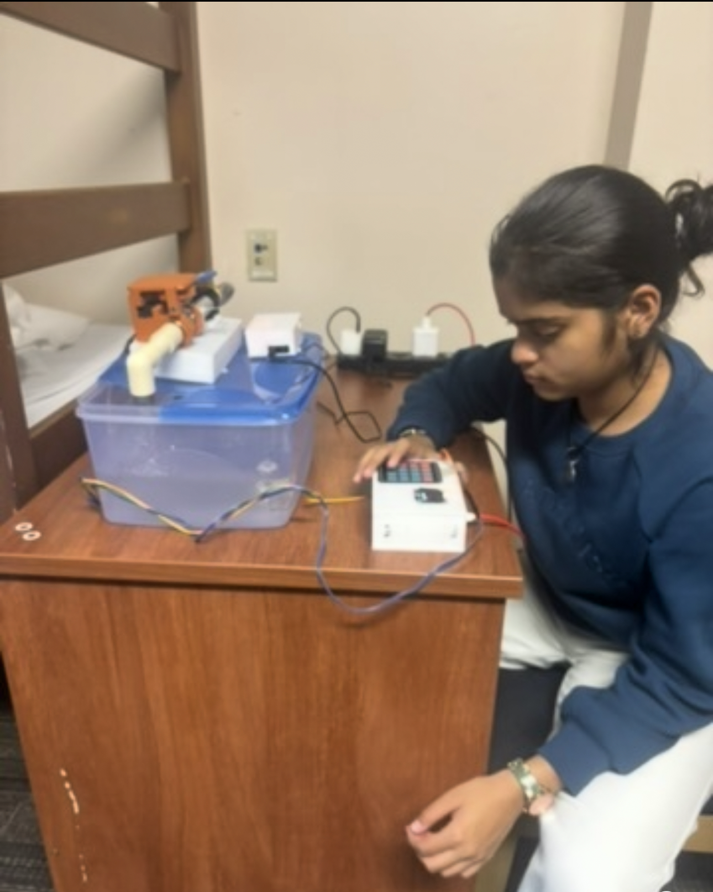 Bench testing with a tub and tubing, before it went near a real pipe. |
|
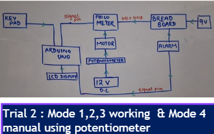 Trial 2, written on the diagram itself: modes 1, 2 and 3 working, and mode 4 still manual using a potentiometer. |
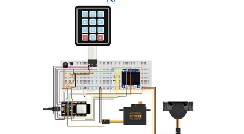 The wiring redrawn as I rearranged the board. |
|
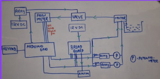 The first hand-drawn block diagram: keypad and Arduino Uno driving a breadboard, flow meter, solenoid valve, motor and alarm off a 12 V supply. |
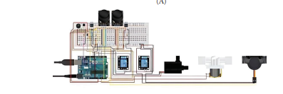 A later version, once the display modules went in. |


Over the iterations I adapted the power supply to be self-sufficient, with longer battery life for homes without a direct electricity connection. I made the controls more intuitive. And for the blocking mechanism I made a complete U-turn: it started with relays and a potentiometer and ended with a servo motor driving a gear mechanism on a ball valve. That was the most enjoyable part of the whole journey. Every iteration taught me something new, and I still feel the journey has not ended.
|
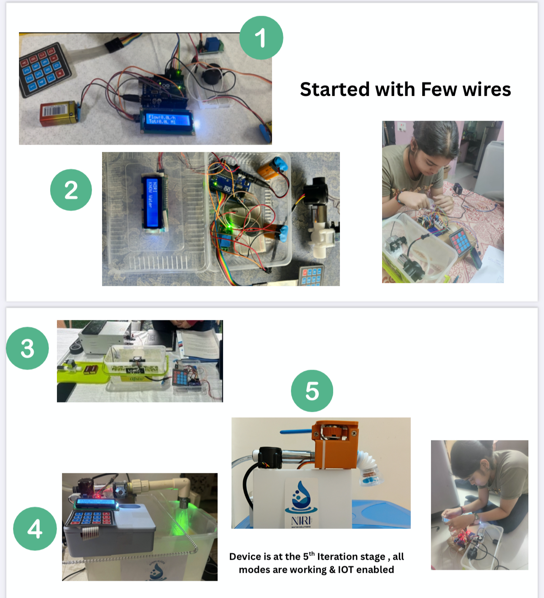 The same thing as photographs. It started with a few wires, and by stage five all the modes were working and it was IoT enabled. |
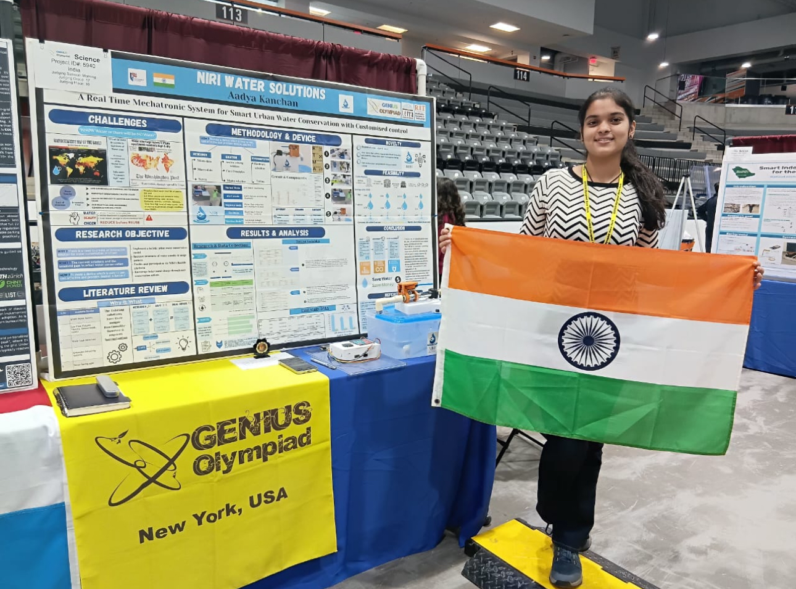 The NIRI board at the GENIUS Olympiad, New York. |
|
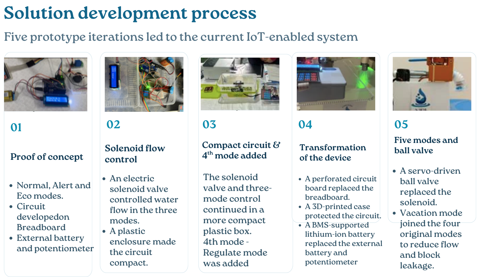 The five build stages behind the current device: 01 proof of concept (normal, alert and eco modes, circuit developed on breadboard, external battery and potentiometer); 02 solenoid flow control (electric solenoid valve controlling water flow in the three modes); 03 compact circuit and fourth mode added (plastic enclosure, regulate mode); 04 transformation of the device (perforated circuit board replacing the breadboard, 3D-printed case, SMD-supported lithium battery replacing the external battery and potentiometer); 05 five modes and ball valve (servo-driven ball valve replaces the solenoid, vacation mode added). |


2. Stress Testing
Stress-tested it against three variables: water impurities, water temperature, and calibration drift, until it held up in every condition.
Testing variables (stress testing) the device to make sure it was optimal in all conditions, considering there was no scope for the device to falter in people's homes or in an industrial setting. Did detailed tests on this set of variables:
- Variable 1: Impurities in water
- Variable 2: Temperature of water
- Variable 3: Calibration of the Device
The testing is written up in IJHSR 2026, Vol. 8 Issue 12, p. 70–80.
|
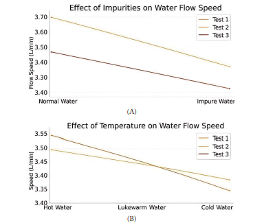 (A) Flow speed with normal versus impure water and (B) flow speed with hot, lukewarm and cold water, over three test runs each. |

3. Deploying and Piloting
The first pilot was my school canteen at Vidyashilp Academy. I was honestly anxious putting that first device in. I was afraid the pipe would burst from the pressure on the gears, or that the gears would buckle and block. I ended up checking on it every single hour, and my teachers definitely thought something was wrong with me that day.
From there, NIRI moved into hospitals and homes, where each site gave me different feedback. I am now installing with Century Builders, and office workspaces like Zerodha.

Fitting a device onto a ceiling pipe.
|
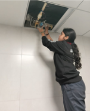 Another install, on a pipe not built for someone my height. |
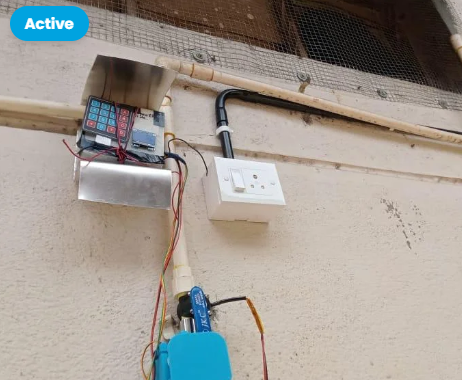 An installed unit on exposed plumbing, showing as active. |
|
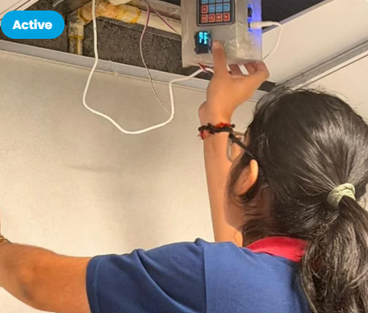 A wall-mounted unit, also active. |
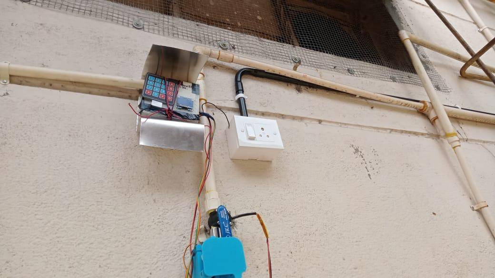 Clamped onto overhead plumbing at another site. |
|
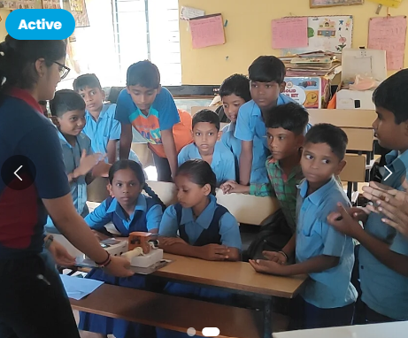 Showing the device, and what it measures, to students. |
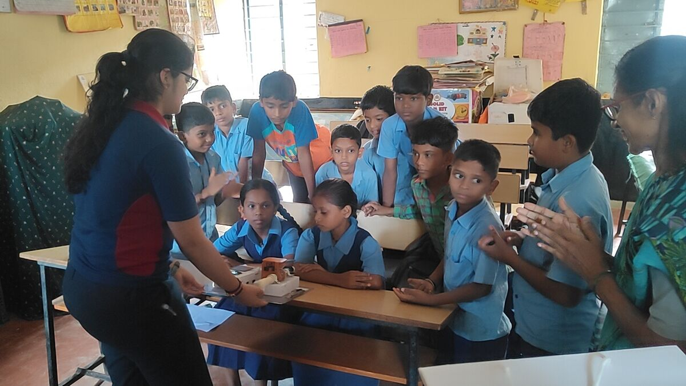 The same kind of session at another school. |

The monitoring dashboard the deployed devices report into, comparing consumption in normal mode against regulated mode. |


Vidyashilp canteen video ↗
Installation explanation ↗ (the document marks 0:47 to 2:27 as the part to use)
4. Validation
Funny story alert. I was on my sixth iteration, the device had been deployed and tested many times, and I walked into the government office with complete trust and confidence in it. As soon as I started my presentation I heard the low rumble of my motor — a sound I had heard many times before — and I immediately knew something was wrong. I had 15 government civil engineers staring at me while my motor chose to give up on the most important day, and I couldn't complete the demonstration.
I asked them for another day. I came back, demonstrated it properly, showed my results, and earned their technical validation for the device achieving up to 30% reduction. I now carry a spare set of every component in my device wherever I go. I call it the motor paranoia.

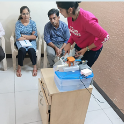
Demonstrating the working device, on the day it behaved.
|
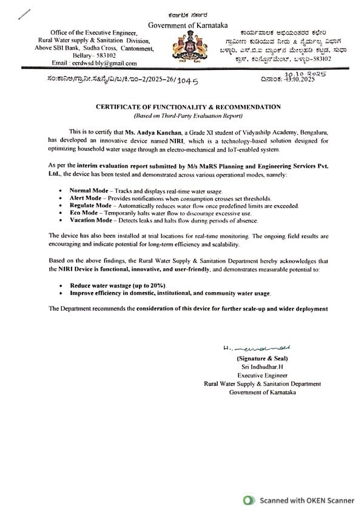 Certificate of Functionality & Recommendation, Rural Water Supply & Sanitation Department, Government of Karnataka, 10 October 2025. It lists the five modes and recommends the device for further scale-up and wider deployment. |
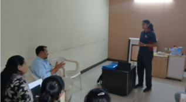 Presenting the results in the meeting room. |
|
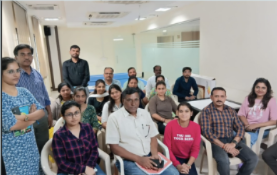 The room I had to come back to on the second day. |
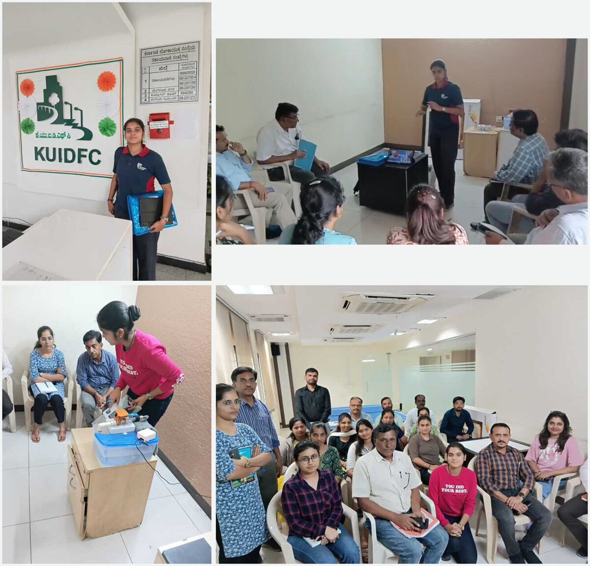 Presentation to field engineers, Government of Karnataka. |


In 2026 I am working at an incubation centre linked to REVA University to make the device better and to build a solar version. That version is to be adopted at REVA University itself, for water conservation in the residential block.
5. IP
The patent application for "A Device and System for Conservation of Water" was filed with the Indian Patent Office in Chennai on 29 November 2024, as application number 202441093699, with a provisional specification.
|
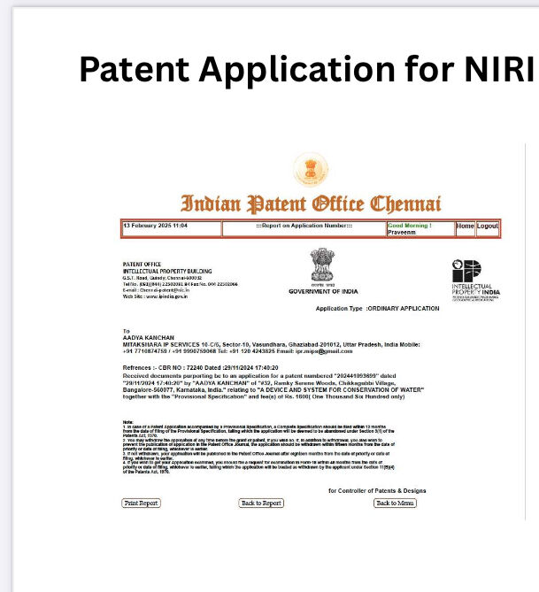 The Indian Patent Office acknowledgement for the application, filed 29 November 2024. |

Impact
NIRI is running in school and hospital canteens, in homes and in offices, with a dashboard tracking what each active device saves. It has been presented to government departments, and the testing is published in IJHSR 2026, Vol. 8 Issue 12, p. 70–80.

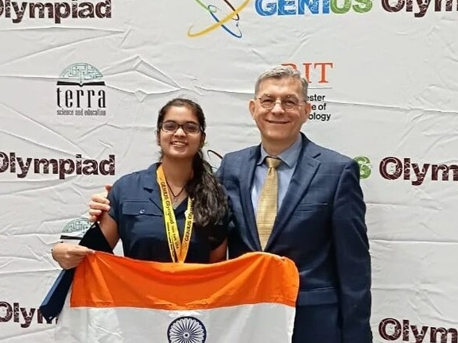
Presenting NIRI at the GENIUS Olympiad in New York.
|
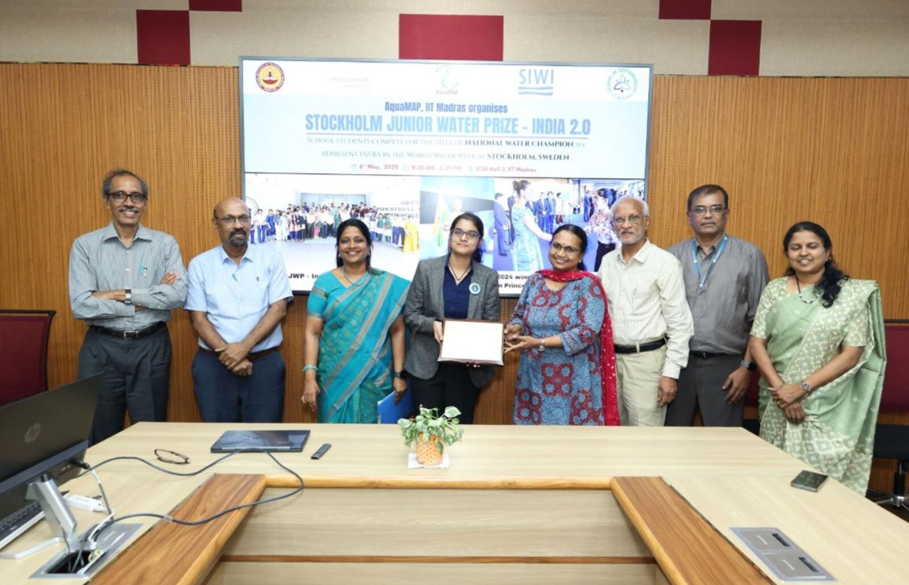 At Stockholm Junior Water Prize India. |
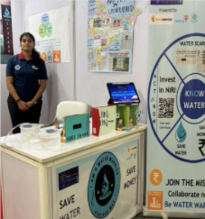 The awareness stall: the device on the counter, and a board on what a household actually uses. |
|
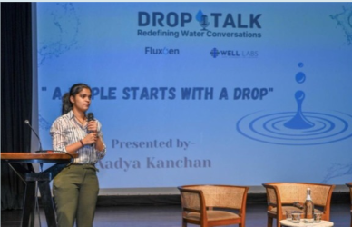 Speaking at Drop Talk — Redefining Water Conversations. |
An interview about NIRI with South First. |
|
Another recorded interview about the device. |
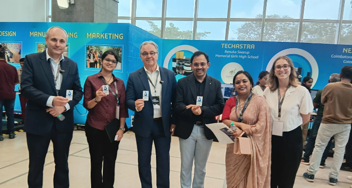 At Techvista. |


NIRI taught me that even the best technology fails if people don't adopt it. Solving big problems doesn't always take grand gestures. Sometimes it takes simple, efficient solutions that create small changes every day.